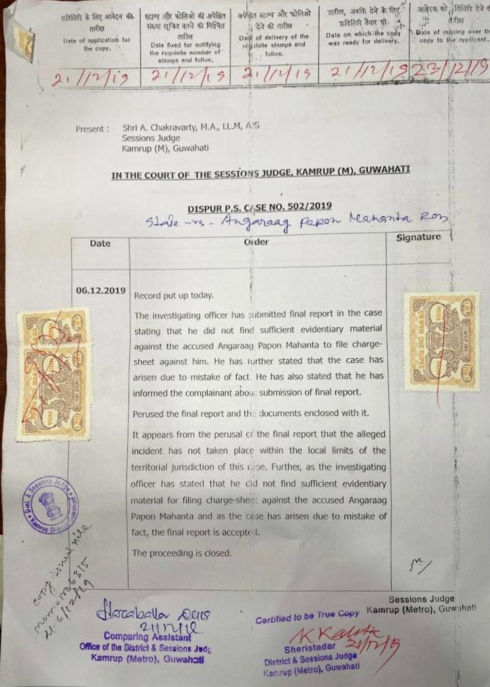

Editorial-only supporting material. This page is included inside the repository for source review and is not linked from the client-facing biography content.
Certified court order

Copy supplied by the client. A substantially identical scan is hosted on Wikimedia Commons.
Working transcription
IN THE COURT OF THE SESSIONS JUDGE, KAMRUP (M), GUWAHATI
DISPUR P.S. C/SE NO. 502/2019
State vs. Angaraag Papon Mahanta
Order dated 06.12.2019
Record put up today.
The investigating officer has submitted final report in the case stating that he did not find sufficient evidentiary material against the accused Angaraag Papon Mahanta to file charge-sheet against him. He has further stated that the case has arisen due to mistake of fact. He has also stated that he has informed the complainant about submission of final report.
Perused the final report and the documents enclosed with it.
It appears from the perusal of the final report that the alleged incident has not taken place within the local limits of the territorial jurisdiction of this case. Further, as the investigating officer has stated that he did not find sufficient evidentiary material for filing charge-sheet against the accused Angaraag Papon Mahanta and as the case has arisen due to mistake of fact, the final report is accepted.
The proceeding is closed.
Source assessment
The order states that the investigating officer did not find sufficient evidentiary material to file a charge sheet, described the matter as arising from a “mistake of fact”, and that the final report was accepted and the proceeding closed.
Primary source The certified order is strong evidence for the narrow legal facts stated in the order. It should be used cautiously for a biography of a living person and should not be interpreted beyond its wording.
No article found Targeted searches located extensive 2018 reporting on the complaint and Papon’s departure from the programme, but did not locate a strong independent newspaper article specifically reporting the 6 December 2019 closure. The Commons file is therefore not an independent news article; it is a hosted copy of the primary document.
The strongest future upgrade would be an official eCourts result, CNR/case identifier or reputable secondary report independently confirming the outcome.